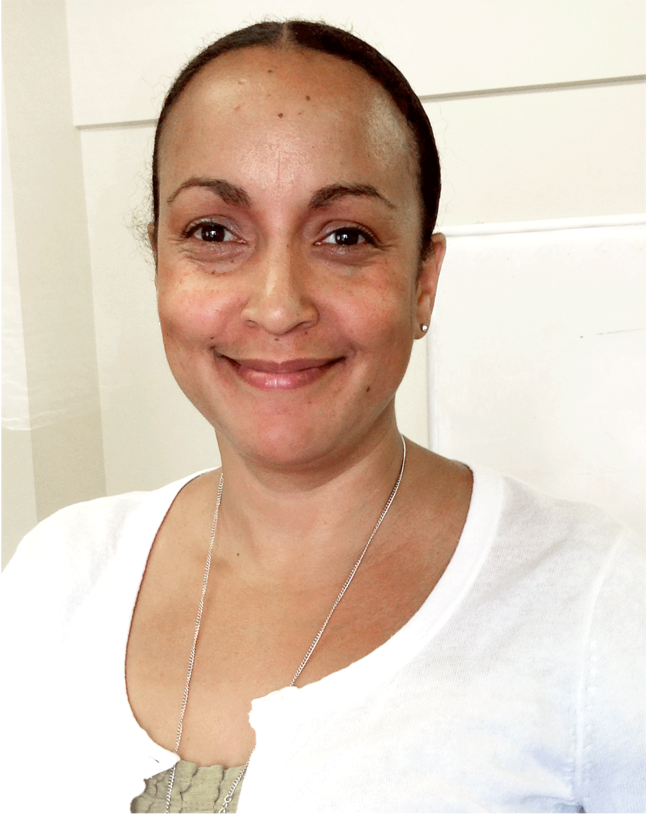

Our Team
-
Thomas WilsonCo-Founder, Executive DirectorThomas is enthusiastic about helping people achieve their goals and believes education and opportunity is the foundation to a successful career. Having been exposed to the tech community for many years, Thomas has seen firsthand the opportunities coding skills can open up for people and wants to help those willing to work hard seize the many opportunities in the tech sector. Thomas has spent five years as an account manager in advertising and eight years as a university advisor and recruiter for Washington State University. Thomas is an Army Veteran and holds a BA in Communications from Washington State University.
-
Ryan WhitleyCo-Founder, Technical DirectorRyan has more than a decade of experience working as a geo-focused application developer and data analyst, whose clients include NASA, The Bill & Melinda Gates Foundation, and the American Red Cross. He helped start Tech Diversified out of a desire to share his passion for technology while finding a way to give back to the community. Ryan has a BA in Geography from the University of Washington and also enjoys West African drumming.
-
Niesha FortCo-Founder, Fundraising and Outreach ManagerNiesha is responsible for Tech Diversified's community outreach and social branding. Niesha has more than 12 years of eCommerce experience that specializes in retail branding, marketing and account management. She has worked at Seattle International Film Festival(SIFF), volunteered for the Moyer Foundation, Volunteers of America and St. Hope Academy. Niesha holds a BA in Political Science from California State University, Sacramento.
-
Naomi MenahemCreative and Marketing ManagerNaomi has worked as an art director and interactive creative director for agencies in Paris and Seattle. Her work has been featured in Cannes Lions, The Seattle Ad Show, Communications Arts and GDUSA. Naomi graduated from Universite Paris-Sorbonne in Art History and later from the Ecole MJM for Design, Paris. Naomi is trilingual with fluencies in Hebrew, French and English. Naomi has a gift of simplifying complex concepts and demonstrating the importance to students of delivering intuitive, visual, user-friendly experiences, while also achieving measurable results.
-
Christina BaroneGrants and Contracts ManagerChristina believes we are at a critical juncture in the United States when it comes to competing internationally from a tech standpoint these days. Christina is a huge proponent in helping her community and a strong advocate for the needs of the underrepresented. She is fascinated and invigorated by nonprofit work and stays on top of trends and tools to better enable a successful endeavor. She has worked with several organizations over the course of twenty years. Working in both the for-profit and nonprofit sectors has taught her what she values and what makes nonprofit work meaningful for her. She is thrilled to work with smart, positive, fun people, who work for companies and organizations that she admires, and that are making the world a better place for all of us. She is excited to be a part of Tech Diversified and to watch it and our future students grow and flourish. She holds a BA in Art History from the Universite Paris-Sorbonne and is an avid horsewoman.